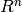
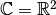

Release Notes¶
Upcoming release¶
ODL 0.7.0 Release Notes (2018-09-09)¶
This release is a big one as it includes the cumulative work over a period of 1 1/2 years. It is planned to be the last release before version 1.0.0 where we expect to land a number of exciting new features.
Highlights¶
Native multi-indexing of ODL space elements¶
The DiscreteLpElement and Tensor (renamed from FnBaseVector) data structures now natively support almost all kinds of Numpy "fancy" indexing.
Likewise, the spaces DiscreteLp and Tensorspace (renamed from FnBase) have more advanced indexing capabilities as well.
Up to few exceptions, elem[indices] in space[indices] is always fulfilled.
Alongside, ProductSpace and its elements also gained more advanced indexing capabilities, in particular in the case of power spaces.
Furthermore, integration with Numpy has been further improved with the implementation of the __array_ufunc__ interface.
This allows to transparently use ODL objects in calls to Numpy UFuncs, e.g., np.cos(odl_obj, out=odl_obj) or np.add.reduce(odl_in, axis=0, out=odl_out) — both these examples were not possible with the __array__ and __array_wrap__ interfaces.
Unfortunately, this changeset makes the odlcuda plugin unusable since it only supports linear indexing.
A much more powerful replacement based on CuPy will be added in version 1.0.0.
Integration with deep learning frameworks¶
ODL is now integrated with three major deep learning frameworks: TensorFlow, PyTorch and Theano.
In particular, ODL Operator and Functional objects can be used as layers in neural networks, with support for automatic differentiation and backpropagation.
This makes a lot of (inverse) problems that ODL can handle well, e.g., tomography, accessible to the computation engines of the deep learning field, and opens up a wide range of possibilities to combine the two.
The implementation of this functionality and examples of its usage can be found in the packages tensorflow, torch and theano in the odl.contrib sub-package (see below).
New contrib sub-package¶
The core ODL library is intended to stay focused on general-purpose classes and data structures, and good code quality is a major goal. This implies that contributions need to undergo scrutiny in a review process, and that some contributions might not be a good fit if they are too specific for certain applications.
For this reason, we have created a new contrib sub-package that is intended for exactly this kind of code.
As of writing this, contrib already contains a number of highly useful modules:
datasets: Loaders and utility code for publicly available datasets (currently FIPS CT, Mayo clinic human CT, Tu Graz MRI and some image data)
fom: Implementations of Figures-of-Merit for image quality assessment
mrc: Reader and writer for the MRC 2014 data format in electron microscopy
param_opt: Optimization strategies for method hyperparameters
pyshearlab: Integration of the pyshearlab Python library for shearlet decomposition and analysis
shearlab: Integration of the Shearlab.jl Julia shearlet library
solvers: More exotic functionals and optimization methods than in the core ODL library
tomo: Vendor- or application-specific geometries (currently Elekta ICON and XIV)
tensorflow: Integration of ODL with TensorFlow
theano: Integration of ODL with Theano
torch: Integration of ODL with
Overhaul of tomographic geometries¶
The classes for representing tomographic geometries in odl.tomo have undergone a major update, resulting in a consistent definition of coordinate systems across all cases, proper documentation, vectorization and broadcasting semantics in all methods that compute vectors, and significant speed-up of backprojection due to better axis handling.
Additionally, factory functions cone_beam_geometry and helical_geometry have been added as a simpler and more accessible way to create cone beam geometries.
New features¶
Function
pkg_supportsfor tracking package features (PR 976).Class
CallbackShowConvergencefor tracking values of functionals in a plot (PR 832).Context manager
NumpyRandomSeedfor setting and resetting the random seed, to get reproducible randomness (PR 1003).Parameter
seedin noise phantoms for reproducible results (PR 1003).Function
as_scipy_functionalthat allows usingFunctionalinstances and their gradients in SciPy's optimization methods (PR 1004).New
textphantom to create images from arbitrary text (PR 1009, PR 1072).Class
CallbackPrintHardwareUsagefor monitoring of OS resources during an optimization loop (PR 1024).New
odl.contribsub-package as a place for user-contributed code that lives outside the ODL core, but is still bundled with it (PR 1020).Class
FiniteSetwith some simple set logic (PR 865).Alternative constructor
frommatrixfor tomographic geometries which takes a matrix that rotates (and scales) the default coordinate system. This is an advanced interface that gives full control over the initialization (PR 968).Factory function
cone_beam_geometryas a simple interface to cone beam geometries (PR 968).Class
FunctionalQuadraticPerturbthat supersedesFunctionalLinearPerturb, with an additional quadratic terms and the usual rules for gradient and proximal (PR 1066).Method
Operator.normthat allows to implement exact (constant) values for operator norms, as well as estimating them with a power iteration (PR 1067).Two phantoms
smooth_cuboidandtgv_phantom(PR 1081, PR 1082, PR 1041).Operator
ComplexModulus, often used in MRI and phase contrast imaging (PR 1041).Optimization method
adamthat is popular in the machine learning community (PR 972).Class
CallbackProgressBarfor prettier progress display in solvers (PR 1097).Additional
axisparameter in thesqueezemethods onRectGridandRectPartitionfor axis-specific squeezing (PR 1110).Tomographic
Geometryclasses now support indexinggeom[indices]for extraction of sub-geometries. This is particularly useful for reconstruction methods that split up the forward operator, e.g., Kaczmarz (PR 1110).Additional
gamma_dualparameter in thepdhgsolver (renamed fromchambolle_pock_solver) for doing acceleration in the dual variable instead of the primal (PR 1092).Function
linear_deformnow exposed (PR 1140).Phantom
uniform_noise(PR 1148).Optimization method
admm_linearizedimplementing the linearized version of the ADMM (Alternating Direction Method of Multipliers) (PR 1198).Functional
Huber, a smoothed version of the L1 Norm (PR 1191).Functional
BregmanDistanceand a methodFunctional.bregmanas helpers to implement "Bregmanized" versions of regularization methods (PR 1267, PR 1340).Optimization method
adupdates, an implementation of the Alternating Dual method of McGaffin and Fessler for nonsmooth optimization (PR 1243).Helper function
helical_geometryto quickly create helical cone beam geometries (PR 1157).Helper functions
douglas_rachford_pd_stepsizeandpdhg_stepsizefor automatically computing step-size-like parameters for solvers that ensure theoretical convergence (PR 1286, PR 1360).Optimization methods
dca,prox_dcaanddoubleprox_dcafor difference-of-convex type problems (PR 1307).Functionals
IndicatorSimplexandIndicatorSumConstraintwith proximals, for restraining solutions of optimization problems to simplices (PR 1347).
Updates/additions to contrib¶
New
datasetssub-package for code to programatically load publicly available datasets from the web; initially containing two FIPS datasets for X-ray CT, Mayo clinic real human CT data, three MRI datasets from TU Graz, as well as some images for image processing applications (PR 992, PR 1041, PR 1193, PR 1211, PR 1352, PR 1321, PR 1367, PR 1383, PR 1421).New
tomosub-package for application- or device-specific geometries and projection operators; initially populated with implementations for the Elekta ICON and XVI CT systems (PR 1035, PR 1125, PR 1138).New
fomsub-package for figures-of-merit (FOMs) that measure image quality (PR 1018, PR 972, PR 1116, PR 1128, PR 1108, PR 1126, PR 1144, PR 1163, PR 1280, PR 1419).New
solverssub-package for application-specific solvers and experimental optimization code; initally contains a nonlocal means functional (PR 1052).New
tensorflowsub-package featuring seamless two-way integration of ODL and Tensorflow. This allows ODL operators and functionals to be used as layers in neural networks, which opens up a big range of (inverse problems) applications to the world of deep learning. Conversely, Tensorflow computation graphs can be treated as ODL vector space elements and, e.g., be fed to ODL solvers, resulting in an abstract representation of the result as a new computation graph (PR 972, PR 1271, PR 1366).New
theanosub-package featuring support for ODL operators and functionals astheano.Op. Unfortunately, this has limited usefulness since the Theano project has been stopped (PR 1098).New
pytorchsub-package integrating ODL with PyTorch, such that operators and functionals can be used in PyTorch neural nets, with similar implications as for thetensorflowintegration, although only one-way (PR 1109, PR 1160, PR 1393).New
pyshearlabsub-package implementing bindings for the pyshearlab library for shearlet decomposition and analysis in 2D (PR 1115).New
solvers.spdhgsub-package containing a stochastic version of the PDHG optimizer (PR 1194, PR 1326).New
shearlabsub-package with a wrapper for the Julia packageShearlab.jlthat implements shearlet decomposition and analysis (PR 1322, PR 1372).New
param_optsub-package for parameter optimization strategies, e.g. regularization parameters in inverse problems (PR 1280).Bugfix: MRC headers with invalid axis order entries are now handled properly (PR 990).
Improvements¶
Anisotropic voxels are now supported in 3D tomographic projections with the ASTRA toolbox (PR 976).
Zero-dimensional grids, partitions and
DiscreteLpinstances are now supported. They come up once in a while, e.g., during splitting or when building up something axis by axis (PR 995).DiscreteLpcan now have a mixture of uniform and non-uniform axes, and (most) operators that take anaxisargument work with this. A major use case is ranges of tomographic projections with non-uniform angles (PR 996, PR 1000).An annoying
ComplexWarninginProductSpace.innerwas silenced by correct code (PR 1005).Operatornow disallows returning a differentoutthan was passed in. This catches erroneous code that would allocate a new element regardless and return that, instead of using the providedoutelement (PR 1007).FFTs now use the fastest available backend by default, instead of defaulting to Numpy's FFT (PR 1006).
Many classes now make more use of caching of their computed properties to save the computational cost. Some of those properties are on hot code paths and make a big difference for the final runtime of typical code. Furthermore, heavily used functions with only a small number of possible inputs make use of an LRU input cache (PR 1012).
The performance of the
douglas_rachford_pdsolver was improved by the use of a temporary and in-place arithmetic (PR 1012).Linear combination in  like spaces uses BLAS only for arrays of more than 50000 entries; below that threshold, a naive implementation tends to be faster (PR 1012).
All
Callbackclasses now support thestepparameter (PR 1021).The
pdhgsolver (thenchambolle_pock_solver) precomputes proximals for a 25 % speed-up (PR 1027).The
indicessequence inshowmethods now takesNoneentries asslice(None), thereby mirroring the behavior of thecoordsparameter (PR 1029).Several functions (
parker_weighting,fpb_filter, the ASTRA CUDA wrappers) got performance tweaks (PR 1035).A number of code paths have been made faster by removing redundant checks, getting rid of
abc, caching, etc. (PR 1043).The whole system of tomographic geometries was overhauled with better internal consistency, clearer definitions of coordinate systems, vectorization of methods, and, most importantly, proper documentation (PR 968, PR 1159).
The
indicate_proj_axisphantom can now be used in 2D as well (PR 968).The ODL to ASTRA geometry translation tries as hard as possible to make the data layout beneficial for performance (less axis swapping). In 3D, this gives a whopping 15x speedup compared to the previous implementation (PR 968).
The duration of
import odlwas decreased with a number of optimizations, most of them consisting in lazy loading of modules or lazy evaluation of expressions that are not strictly needed at import time (PR 1090, PR 1112, PR 1402).ProductSpaceElementnow implements the__array__interface if itsspaceis a power space (PR 972).A mutex was added to the ASTRA CUDA wrapper classes, to avoid race conditions between threads, e.g. when using
tensorflow(PR 972).Calls to
superhave been carefully revised and unified, either assuper(<class_name>, self).<attr>for collaborative multiple inheritance, or as hard-wiredOtherClass.<attr>if a very specific attribute should be used. As an aside, remnants of the slowsuperfrom thefuturemodule have been removed (PR 1161).Detectorsubclasses can opt out of bounds checking with the newcheck_boundsparameter (PR 1059).CallbackPrintIterationnow passes through keyword args to theprintfunction, and theCallbackPrintTiminghas gotten acumulativeparameter (PR 1176).Printing of ODL space elements, operators and others has been improved, and the implementation has been simplified with helper functions (PR 1203).
The internal representation of vector spaces and similar structures has been significantly simplified. Before, there were a number of
*Setand*Spaceclasses alongside, where the former was a more general version of the latter with less structure and fewer capabilities. This separation has been removed in favor of duck-typing: if it quacks like a space (e.g. has an inner product), it is a space (PR 1205).A number of operators (differential operators like
Gradientand pointwise vector field operators likePointwiseNorm) have been equipped with the capability of customizing their ranges (PR 1216).Phantoms now take two additional parameters
min_ptandmax_ptthat allow restricting their extent to a subvolume if both are given, or shift the phantom if only one of them is given (PR 1223).KullbackLeiblerCrossEntropy.proximalnow works with complex spaces (PR 1088).The
insertmethod ofIntervalProd,RectGridandRectPartitionnow takes an arbitrary number of objects to insert (PR 1088).Numpy
ufuncoperators with 2 disparate output data types are now supported (PR 1088).ProductSpace.shapenow recursively determines the axes and its sizes in case of power spaces. Thesizeandndimproperties work accordingly, i.e.,len(pspace)is no longer necessarily the same aspspace.ndim, as for Numpy arrays (PR 1088).ProductSpaceand its elements now support indexing with integers, slices, tuples and lists (PR 1088).The
TensorSpaceclass (replacement forFnBase) and its element classTensor(and by analogy alsoDiscreteLpand its elements) now fully and natively support Numpy "fancy" indexing up to very few exceptions (PR 1088).TensorandDiscreteLpElementsupport the Numpy 1.13__array_ufunc__interface which allows classes to take control over how ufuncs are evaluated. With this interface, it is possible to transparently perform in-place operations likenp.cos(odl_obj, out=odl_obj), which was not possible with__array__and__array_wrap__before. Furthermore, other methods of Numpy ufuncs are available, e.g.np.add.reduce(odl_in, axis=0, out=odl_out)(PR 1088).A non-discretized
FunctionSpacecan now be vector- or tensor-valued, using a Numpydtypewith shape, e.g.,np.dtype((float, (2, 3)))(PR 1088).The
elementmethods ofTensorSpaceandDiscreteLphave a neworderparameter to determine the array memory layout (PR 1088).ProductSpaceElement.asarrayhas been added (PR 1152).SeparableSumnow accepts vector-valued step sizes, and several functionals (e.g.L1Norm) takes pointwise step sizes, with full support for proximal, convex conjuage etc. (PR 1166).KullbackLeibler.convex_conjnow works on product spaces (PR 1287).Generation of the sparse matrix containing the operators in
ProductSpaceOperatoris now more robust and disallows malformed constructions likeProductSpaceOperator([A, B])with matrices that are not 2D (PR 1293, PR 1295).ProductSpaceandProductSpaceElementnow implementreal_space,complex_space,real,imag,conj,astypeand__array_wrap__where applicable (PR 1288).matrix_representationnow works with arbitrary tensor spaces as domain and range of an operator. The result will be a tensor with the sum of the number of axes in domain and range (PR 1308).Optimizations for common cases in
PointwiseNormhave been added, making the code run 1.5-2 times faster in typical conditions (PR 1318).Several complex-to-real operators like
ComplexModulusnow have aderivativethat implements the  interpretation. Furthermore, linearity is interpreted in the same sense, allowing optimization of certain operations (PR 1324, PR 1331).The colorbar in plots from
showcan new be turned off with thecolorbarflag (PR 1343).FunctionSpaceandProductSpacenow have propertiesis_realandis_complex(PR 1348).power_method_opnormnow starts from a noise element, making it easier to use with operators that have null spaces, likeGradient(PR 1286).The default of the
omegarelaxation parameter in thelandwebersolver has been changed from 1 to1 / op.norm(estimate=True) ** 2, which theoretically guarantees convergence (PR 1286).For the solvers
douglas_rachford_pdandpdhg, the step-size-like parameters have been made optional, with the default values being computed automatically using some heuristics and the bound that guarantees convergence (PR 1286).The
LpNormproximal now also supports exponent infinity (PR 1347).Filters for FBP reconstruction can now be given as arrays to
fbp_op(PR 1379).ProductSpaceand its element type now implementnbytes(PR 1410).
Bugfixes¶
Resolve an issue with negative indices resulting in a truncated image in
ellipsoid_phantom(PR 998).MultiplyOperator.adjointnow works for scalar domain and range (PR 987).ReductionOperator._callnow properly unwraps the result before returning it (PR 1012, PR 1010).Fix the issue of
0 * log(0)producingNaNinKullbackLeibler(PR 1042).Sometimes, titles of figures resulting from
showwould be clipped. This is now fixed (PR 1045).Parallel3dEulerGeometrynow actually works with ASTRA projectors (PR 968).Fix a rounding error preventing colorbar ticks to show up in
show(PR 1063).DiscreteLp.astypenow propagates its axis labels as expected (PR 1073).Resolve an issue with wrong inner products on non-uniformly discretized spaces (PR 1096).
CallbackStorenow works with objects that do have acopymethod but do implement__copy__(PR 1094).RayTransformand FBP operators used the wrong projection space weighting if the reconstruction space was unweighted. This was fixed, but the patch has been superseded by PR 1088 (PR 1099, PR 1102).Fix
LinearSpace.zerosusing the wrong order of arguments (PR 972).ProductSpaceElementnow has a (space pass-through)shapeproperty (PR 972).Resolve several issues with complex spaces in optimization problems (PR 1120).
The tick labels in
showare now "NaN-proof" (PR 1092, PR 1158, PR 1088).Fix a bug in
nonuniform_partitionthat caused length-1 inputs to crash the function (PR 1141).Fix
DiscreteLpElement.real(and.imag) sometimes returning a copy instead of a view (PR 1155).Fix
ConeFlatGeometrynot propagatingpitchin its__getitem__method (PR 1173).Fix a bug in
parker_weightingcaused by the change of geometry definitions (PR 1175).Resolve an issue with wrong results of the L1 convex conjugate proximal when input and output were aliased (PR 1182).
Correct the implementation of
Operator{Left,Right}VectorMult.adjointfor complex spaces (PR 1192).Add a workaround for the fact BLAS internally works with 32-bit integers as indices, which goes wrong for very large arrays (PR 1190).
Fix Numpy errors not recognizing
builtins.intfrom thefuturelibrary as validdtypeby disallowing that object asdtypeinternally (PR 1205).Resolve a number of minor issues with geometry methods' broadcasting (PR 1210).
Correct handling of degenerate (size 1) axes in Fourier transform range inference (PR 1208).
Fix a bug in
OperatorSumandOperatorPointwiseProductthat resulted in wrong outputs for aliased input and output objects (PR 1225).Fix the broken
fielddetermination forProductSpace(space, 0)(PR 1088).Add back the string dtypes in
NumpyTensorSpace.available_dtypes(PR 1236, PR 1294).Disallow bool conversion of
Tensorwithsize > 1(PR 1235).Fix a sign flip error in 2D geometries (PR 1245).
Blacklisted several patch versions of NumPy 1.14 due to bugs in new-style array printing that result in failing doctests (PR 1265).
Correct the implementations of
PointwiseNorm.derivativeandGroupL1Norm.gradientto account for division-by-zero errors (PR 1070).Fix issue in
NumpyTensor.lincombwhen one of the scalars is NaN (PR 1272).Fix indexing into
RectPartition.byaxisproducing a wrong result with integers (PR 1284).Resolve
space.astype(float)failing forspace.dtype == bool(PR 1285).Add a missing check for scalar
sigmainFunctionalQuadraticPerturb.proximal(PR 1283).Fix an error in the adjoint of
SamplingOperatortriggered by asampling_pointsargument of length 1 (PR 1351).Make
DiscreteLpElement.showuse the correct interpolation scheme (PR 1375).Fix checking of pyFFTW versions to also support Git revision versions (PR 1373).
Correct the implementation of
MultiplyOperator.adjointfor complex spaces (PR 1390).Replace the improper and potentially ambiguous indexing with tuple indexing as signalled by the Numpy deprecation warning (PR 1420).
API Changes¶
Functions and attributes related to convex conjugates now use
convex_conjas name part instead ofcconj(PR 1048).ParallelGeometrywas renamed toParallelBeamGeometry(PR 968).HelicalConeFlatGeometrywas renamed toConeFlatGeometry, andCircularConeFlatGeometrywas removed as special case (PR 968).pitch_offsetin 3D cone beam geometries was renamed tooffset_along_axis(PR 968).ellipsoid_phantomnow takes angles in radians instead of degrees (PR 972).The
L1Norm.gradientoperator now implements the (ad-hoc)derivativemethod, returningZeroOperator(PR 972).The base class for solver callbacks was renamed from
SolverCallbacktoCallback(PR 1097).The
chambolle_pock_solverhas been renamed topdhg(Primal-Dual Hybrid Gradient), along with all references to "Chambolle-Pock" (PR 1092).The
gammaparameter inpdhg(see one above) has been renamed togamma_primal, since one can now alternatively specify agamma_dualacceleration parameter (PR 1092).As a result of merging internal
*Setand*Spaceclasses, a number of arguments to internal class constructors likeFunctionSpaceMappinghave been renamed accordingly (PR 1205)Remove the (dubious)
dist_using_inneroptimization of vector spaces (PR 1214).The class
Ntupleshas been merged intoFnBase, but both have been superseded by PR 1088 (PR 1205, PR 1216).The
writable_arraycontext manager no longer takes an arbitrary number of positional arguments as pass-through, only keyword arguments (PR 1088).LinearSpaceElementandProductSpaceElementare no longer available in the top-levelodlnamespace (PR 1088).The
NoWeightingclasses have been removed due to their odd behavior. For the time being, no weighting is equivalent to weighting with constant 1.0, but this will change a bit in the future (PR 1088).The classes
FnBaseandNumpyFnhave been removed in favor ofTensorSpaceandNumpyTensorSpace. Likewise, thefnfactory function is now calledtensor_space, and any other name associated withfnhas been renamed accordingly (PR 1088).The
uspaceanddspaceproperties ofDiscretizationhave been renamed tofspace("function space") andtspace("tensor space"), respectively (PR 1088).With mandatory multi-indexing support for
TensorSpaceimplementations, the oldCudaFnclass is no longer supported. The next release 1.0.0 will have a much more powerful replacement using CuPy, see PR 1401 (PR 1088).The meanings of the parameters
fandghas been switched inpdhgto make the interface match the rest of the solvers (PR 1286).Bindings to the STIR reconstruction software have been overhauled and moved out of the core into a separate repository (PR 1403).
ODL 0.6.0 Release Notes (2017-04-20)¶
Besides many small improvements and additions, this release is the first one under the new Mozilla Public License 2.0 (MPL-2.0).
New features¶
The Kaczmarz method has been added to the
solvers(PR 840).Most immutable types now have a
__hash__method (PR 840).A variant of the Conjugate Gradient solver for non-linear problems has been added (PR 554).
There is now an example for tomographic reconstruction using Total Generalized Variation (TGV). (PR 883).
Power spaces can now be created using the
**operator, e.g.,odl.rn(3) ** 4. Likewise, product spaces can be created using multiplication*, i.e.,odl.rn(3) * odl.rn(4)(PR 882).A
SamplingOperatorfor the extraction of values at given indices from arrays has been added, along with its adjointWeightedSumSamplingOperator(PR 940).Callbacks can now be composed with operators, which can be useful, e.g., for transforming the current iterate before displaying it (PR 954).
RayTransform(and thus alsofbp_op) can now be directly used on spaces of complex functions (PR 970).
Improvements¶
In
CallbackPrintIteration, a step number between displays can now be specified (PR 871).OperatorPointwiseProductgot its missingderivative(PR 877).SeparableSumfunctionals can now be indexed to retrieve the constituents (PR 898).Better self-printing of callbacks (PR 881).
ProductSpaceOperatorand subclasses now havesizeand__len__, and the parent also hasshape. Also self-printing of these operators is now better (PR 901).Arithmetic methods of
LinearSpacehave become more permissive in the sense that operations likespace_element + raw_arraynow works if the array can be cast to an element of the same space (PR 902).There is now a (work-in-progress) document on the release process with the aim to avoid errors (PR 872).
The MRC extended header implementation is now much simpler (PR 917).
The
show_discrete_dataworkhorse is now more robust towards arrays withinfandnanentries regarding colorbar settings (PR 921).The
titleinCallbackShoware now interpreted as format string with iteration number inserted, which enables updating the figure title in real time (PR 923).Installation instructions have been arranged in a better way, grouped after different ways of installing (PR 884).
A performance comparison example pure ASTRA vs. ODL with ASTRA for 3d cone beam has been added (PR 912).
OperatorCompavoids an operator evaluation inderivativein the case when the left operator is linear (PR 957).FunctionalCompnow has a default implementation ofgradient.derivativeif the operator in the composition is linear (PR 956).The
savetoparameter ofCallbackShowcan now be a callable that returns the file name to save to when called on the current iteration number (PR 955).
Changes¶
The
sphinxextsubmodule has been from upstream (PR 846).The renames
TensorGrid->RectGridanduniform_sampling->uniform_gridhave been made, and separate classRegularGridhas been removed in favor of treating regular grids as a special case ofRectGrid. Instances ofRectGridhave a new propertyis_uniformfor this purpose. Furthermore, uniformity ofRectPartitionandRectGridis exposed as property per axis usingis_uniform_byaxis(PR 841).extentof grids and partitions is now a property instead of a method (PR 889).The number of iterations in solvers is no longer optional since the old default 1 didn't make much sense (PR 888).
The
nlevelsargument ofWaveletTransformis now optional, and the default is the maximum number of levels as determined by the new functionpywt_max_nlevels(PR 880).MatVecOperatoris now calledMatrixOperatorand has been moved to thetensor_opsmodule. This solves a circular dependency issue with ODL subpackages (PR 911).All step parameters of callbacks are now called just
step(PR 929).The
implname for the scikit-image back-end inRayTransformhas been changed fromscikittoskimage(PR 970).ODL is now licensed under the Mozilla Public License 2.0 (PR 977).
Bugfixes¶
Fix an argument order error in the gradient of
QuadraticForm(PR 868).Lots of small documentation fixes where ", optional" was forgotten in the Parameters section (PR 554).
Fix an indexing bug in the
indicate_proj_axisphantom (PR 878).Fix wrong inheritance order in
FileReaderRawBinaryWithHeaderthat lead to wrongheader_size(PR 893).Comparison of arbitrary objects in Python 2 is now disabled for a some ODL classes where it doesn't make sense (PR 933).
Fix a bug in the angle calculation of the scikit-image back-end for Ray transforms (PR 947).
Fix issue with wrong integer type in
as_scipy_operator(PR 960).Fix wrong scaling in
RayTransformand adjoint with unweighted spaces (PR 958).Fix normalization bug of
min_ptandmax_ptparameters inRectPartition(PR 971).Fix an issue with
*argsinCallbackShowthat lead to thetitleargument provided twice (PR 981).Fix an unconditional
pytestimport that lead to anImportErrorif pytest was not installed (PR 982).
ODL 0.5.3 Release Notes (2017-01-17)¶
Lots of small improvements and feature additions in this release.
Most notable are the remarkable performance improvements to the ASTRA bindings (up to 10x), the addition of fbp_op to create filtered back-projection operators with several filter and windowing options, as well as further performance improvements to operator compositions and the show methods.
New features¶
Add the
SeparableSum(func, n)syntax for n-times repetition of the same summand (PR 685).Add the Ordered Subsets MLEM solver
odl.solvers.osmlemfor faster EM reconstruction (PR 647).Add
GroupL1NormandIndicatorGroupL1UnitBallfor mixed L1-Lp norm regularization (PR 620).Add
fbp_ophelper to create filtered back-projection operators for a range of geometries (PR 703).Add
IndicatorZerofunctional in favor of ofConstantFunctionalConvexConj(PR 707).Add reader for MRC data files and for custom binary formats with fixed header (PR 716).
Add
NuclearNormfunctional for multi-channel regularization (PR 691).Add
CallbackPrintfor printing of intermediate results in iterative solvers (PR 691).Expose Numpy ufuncs as operators in the new
ufunc_opssubpackage (PR 576).Add
ScalingFunctionalandIdentityFunctional(PR 576).Add
RealPart,ImagPartandComplexEmbeddingoperators (PR 706).Add
PointwiseSumoperator for vector fields (PR 754).Add
LineSearchFromIterNumfor using a pre-defined mapping from iteration number to step size (PR 752).Add
axis_labelsoption toDiscreteLpfor custom labels in plots (PR 770).Add Defrise phantom for cone beam geometry testing (PR 756).
Add
filteroption tofbp_opandtam_danielson_windowandparker_weightinghelpers for helical/cone geometries (PR 756, PR 806, PR 825).Add ISTA (
proximal_gradient) and FISTA (accelerated_proximal_gradient) algorithms, among others useful for L1 regularization (PR 758).Add
salt_pepper_noisehelper function (PR 758).Expose FBP filtering as operator
fbp_filter_op(PR 780).Add
parallel_beam_geometryhelper for creation of simple test geometries (PR 775).Add
MoreauEnvelopefunctional for smoothed regularization (PR 763).Add
savetooption toCallbackShowto store plots of iterates (PR 708).Add
CallbackSaveToDiskandCallbackSleep(PR 798).Add a utility
signature_stringfor robust generation of strings forreprorstr(PR 808).
Improvements¶
New documentation on the operator derivative notion in ODL (PR 668).
Add largescale tests for the convex conjugates of functionals (PR 744).
Add
domainparameter toLinDeformFixedTemplfor better extensibility (PR 748).Add example for sparse tomography with TV regularization using the Douglas-Rachford solver (PR 746).
Add support for 1/r^2 scaling in cone beam backprojection with ASTRA 1.8 using a helper function for rescaling (PR 749).
Improve performance of operator scaling in certain cases (PR 576).
Add documentation on testing in ODL (PR 704).
Replace occurrences of
numpy.matrixobjects (PR 778).Implement Numpy-style indexing for
ProductSpaceElementobjects (PR 774).Greatly improve efficiency of
showby updating the figure in place instead of re-creating (PR 789).Improve efficiency of operator derivatives by short-circuiting in case of a linear operator (PR 796).
Implement simple indexing for
ProducSpaceOperator(PR 815).Add caching to ASTRA projectors, thus making algorithms run much faster (PR 802).
Changes¶
Rename
vector_field_spacetotangent_bundlein vector spaces (more adequate for complex spaces) (PR 702).Rename
showparameter ofshowmethods toforce_show(PR 771).Rename
elem.ufunctoelem.ufuncswhere implemented (PR 809).Remove "Base" from weighting base classes and rename
weightparameter toweightingfor consistency (PR 810).Move
tensor_opsmodule fromodl.discrtoodl.operatorfor more general application (PR 813).Rename
ellipsetoellipsoidin names intended for 3D cases (PR 816).Pick the fastest available implementation in
RayTransformby default instead ofastra_cpu(PR 826).
Bugfixes¶
Prevent ASTRA cubic voxel check from failing due to numerical rounding errors (PR 721).
Implement the missing
__ne__inRectPartition(PR 748).Correct adjoint of
WaveletTransform(PR 758).Fix issue with creation of phantoms in a space with degenerate shape (PR 777).
Fix issue with Windows paths in
collect_ignore.Fix bad dict lookup with
RayTransform.adjoint.adjoint.Fix rounding issue in a couple of indicator functionals.
Several bugfixes in
showmethods.Fixes to outdated example code.
ODL 0.5.2 Release Notes (2016-11-02)¶
Another maintenance release that fixes a number of issues with installation and testing, see issue 674, issue 679, and PR 692 and PR 696.
ODL 0.5.1 Release Notes (2016-10-24)¶
This is a maintenance release since the test suite was not bundled with PyPI and Conda packages as intended already in 0.5.0.
From this version on, users can run python -c "import odl; odl.test()" with all types of installations (from PyPI, Conda or from source).
ODL 0.5.0 Release Notes (2016-10-21)¶
This release features a new important top level class Functional that is intended to be used in optimization methods.
Beyond its parent Operator, it provides special methods and properties like gradient or proximal which are useful in advanced smooth or non-smooth optimization schemes.
The interfaces of all solvers in odl.solvers have been updated to make use of functionals instead of their proximals, gradients etc. directly.
Further notable changes are the implementation of an as_writable_array context manager that exposes arbitrary array storage as writable Numpy arrays, and the generalization of the wavelet transform to arbitrary dimensions.
See below for a complete list of changes.
New features¶
Add
Functionalclass to the solvers package. (PR 498)Functionalis a subclass of odlOperatorand intended to help in formulating and solving optimization problems. It contains optimization specific features likeproximalandconvex_conj, and built-in intelligence for handling things like translation, scaling of argument or scaling of functional. * Migrate all solvers to work withFunctional's instead of raw proximals etc. (PR 587) *FunctionalProductandFunctionalQuotientwhich allow evaluation of the product/quotient of functions and also provides a gradient through the Leibniz/quotient rules. (PR 586) *FunctionalDefaultConvexConjugatewhich acts as a default forFunctional.convex_conj, providing it with a proximal property. (PR 588) *IndicatorBoxandIndicatorNonnegativitywhich are indicator functions on a box shaped set and the set of nonnegative numbers, respectively. They return 0 if all points in a vector are inside the box, and infinity otherwise. (PR 589) * AddFunctional``s for ``KullbackLeiblerandKullbackLeiblerCrossEntropy, together with corresponding convex conjugates (PR 627). Also add proximal operator for the convex conjugate of cross entropy Kullback-Leibler divergence, calledproximal_cconj_kl_cross_entropy(PR 561)Add
ResizingOperatorfor shrinking and extending (padding) of discretized functions, including a variety of padding methods. (PR 499)Add
as_writable_arraythat allows casting arbitrary array-likes to a numpy array and then storing the results later on. This is intended to be used with odl vectors that may not be stored in numpy format (like cuda vectors), but can be used with other types like lists. (PR 524)Allow ASTRA backend to be used with arbitrary dtypes. (PR 524)
Add
resettoSolverCallbackthat resets the callback to its initial state. (issue 552)Add
nonuniform_partitionutility that creates a partition with non-uniformly spaced points. This is useful e.g. when the angles of a tomography problem are not exactly uniform. (PR 558)Add
Functionalclass to the solvers package.Functionalis a subclass of odlOperatorand intended to help in formulating and solving optimization problems. It contains optimization specific features likeproximalandconvex_conj, and built-in intelligence for handling things like translation, scaling of argument or scaling of functional. (PR 498)Add
FunctionalProductandFunctionalQuotientwhich allow evaluation of the product/quotient of functions and also provides a gradient through the Leibniz/quotient rules. (PR 586)Add
FunctionalDefaultConvexConjugatewhich acts as a default forFunctional.convex_conj, providing it with a proximal property. (PR 588)Add
IndicatorBoxandIndicatorNonnegativitywhich are indicator functions on a box shaped set and the set of nonnegative numbers, respectively. They return 0 if all points in a vector are inside the box, and infinity otherwise. (PR 589)Add proximal operator for the convex conjugate of cross entropy Kullback-Leibler divergence, called
proximal_cconj_kl_cross_entropy(PR 561)Add
Functional's forKullbackLeiblerandKullbackLeiblerCrossEntropy, together with corresponding convex conjugates (PR 627)Add tutorial style example. (PR 521)
Add MLEM solver. (PR 497)
Add
MatVecOperator.inverse. (PR 608)Add the
Rosenbrockstandard test functional. (PR 602)Add broadcasting of vector arithmetic involving
ProductSpacevectors. (PR 555)Add
phantoms.poisson_noise. (PR 630)Add
NumericalGradientandNumericalDerivativethat numerically compute gradient and derivative ofOperator's andFunctional's. (PR 624)
Improvements¶
Add intelligence to
power_method_opnormso it can terminate early by checking if consecutive iterates are close. (PR 527)Add
BroadcastOperator(op, n),ReductionOperator(op, n)andDiagonalOperator(op, n)syntax. This is equivalent toBroadcastOperator(*([op] * n))etc, i.e. createncopies of the operator. (PR 532)Allow showing subsets of the whole volume in
DiscreteLpElement.show. Previously this allowed slices to be shown, but the new version allows subsets such as0 < x < 3to be shown as well. (PR 574)Add
Solvercallback.reset()which allows users to reset a callback to its initial state. Applicable if users want to reuse a callback in another solver. (PR 553)WaveletTransformand related operators now work in arbitrary dimensions. (PR 547)Several documentation improvements. Including:
Improved installation docs and update of Chambolle-Pock documentation. (PR 121)
Changes¶
Change definition of
LinearSpaceVector.multiplyto match the definition used by Numpy. (PR 509)Rename the parameters
padding_methodindiff_ops.pyandmodeinwavelet.pytopad_mode. The parameterpadding_valueis now calledpad_const. (PR 511)Expose
ellipse_phantomandshepp_logan_ellipsestoodl.phantom. (PR 529)Unify the names of minimum (
min_pt), maximum (max_pt) and middle (mid_pt) points as well as number of points (shape) in grids, interval products and factory functions for discretized spaces. (PR 541)Remove
simple_operatorsince it was never used and did not follow the ODL style. (PR 543) The parameterpadding_valueis now calledpad_const.Remove
Interval,RectangleandCuboidsince they were confusing (Capitalized name but not a class) and barely ever used. Users should instead useIntervalProdin all cases. (PR 537)The following classes have been renamed (PR 560):
LinearSpaceVector->LinearSpaceElementDiscreteLpVector->DiscreteLpElementProductSpaceVector->ProductSpaceElementDiscretizedSetVector->DiscretizedSetElementDiscretizedSpaceVector->DiscretizedSpaceElementFunctionSetVector->FunctionSetElementFunctionSpaceVector->FunctionSpaceElement
Change parameter style of differential operators from having a
pad_modeand a separateedge_orderargument that were mutually exclusive to a singlepad_modethat covers all cases. Also added several new pad modes to the differential operators. (PR 548)Switch from RTD documentation hosting to gh-pages and let Travis CI build and deploy the documentation. (PR 536)
Update name of
proximal_zerotoproximal_const_func. (PR 582)Move unit tests from top level
test/toodl/test/folder and distribute them with the source. (PR 638)Update pytest dependency to [>3.0] and use new featuers. (PR 653)
Add pytest option
--documentationto test all doctest examples in the online documentation.Remove the
pip install odl[all]option since it fails by default.
Bugfixes¶
Fix
python -c "import odl; odl.test()"not working on Windows. (PR 508)Fix a
TypeErrorbeing raised inOperatorTestwhen runningoptest.ajoint()without specifying an operator norm. (PR 525)Fix scaling of scikit ray transform for non full scan. (PR 523)
Fix bug causing classes to not be vectorizable. (PR 604)
Fix rounding problem in some proximals (PR 661)
ODL 0.4.0 Release Notes (2016-08-17)¶
This release marks the addition of the deform package to ODL, adding functionality for the deformation
of DiscreteLp elements.
New features¶
ODL 0.3.1 Release Notes (2016-08-15)¶
This release mainly fixes an issue that made it impossible to pip install odl with version 0.3.0.
It also adds the first really advanced solvers based on forward-backward and Douglas-Rachford
splitting.
New features¶
Improvements¶
DiscreteLp.element()now allows non-vectorized and 1D scalar functions as input. (PR 476)Speed improvements in the unit tests. (PR 479)
Uniformization of
__init__()docstrings and many further documentation and naming improvements. (PR 489, PR 482, PR 491)Clearer separation between attributes that are intended as part of the subclassing API and those that are not. (PR 471)
Chambolle-Pock solver accepts also non-linear operators and has better documentation now. (PR 490)
Clean-up of imports. (PR 492)
All solvers now check that the given start value
xis inop.domain. (PR 502)Add test for in-place evaluation of the ray transform. (PR 500)
Bugfixes¶
ODL 0.3.0 Release Notes (2016-06-29)¶
This release marks the removal of odlpp from the core library. It has instead been moved to a separate library, odlcuda.
New features¶
To enable cuda backends for the odl spaces, an entry point
'odl.space'has been added where external libraries can hook in to addFnBaseandNtuplesBasetype spaces.Add pytest fixtures
'fn_impl'and'ntuple_impl'to the test configconf.py. These can now be accessed from any test.Allow creation of general spaces using the
fn,cnandrnfactories. These functions now take animplparameter which defaults to'numpy'but with odlcuda installed it may also be set to'cuda'. The old numpy specificFn,CnandRnfunctions have been removed.
Changes¶
Move all CUDA specfic code out of the library into odlcuda. This means that
cu_ntuples.pyand related files have been removed.Rename
ntuples.pytonpy_ntuples.py.Add
Numpyto the numy based spaces. They are now namedNumpyFnandNumpyNtuples.Prepend
npy_to all methods specific tontuplessuch as weightings.
ODL 0.2.4 Release Notes (2016-06-28)¶
New features¶
Add
uniform_discr_fromdiscr(PR 467).Add conda build files (commit 86ff166).
Bugfixes¶
Fix bug in submarine phantom with non-centered space (PR 469).
Fix crash when plotting in 1d (commit 3255fa3).
Changes¶
ODL 0.2.3 Release Notes (2016-06-12)¶
New features¶
uniform_samplingnow supports thenodes_on_bdryoption introduced inRectPartition(PR 308).DiscreteLpVector.showhas a newcoordsoption that allows to slice by coordinate instead of by index (PR 309).New
uniform_discr_fromintvto discretize an existingIntervalProdinstance (PR 318).The
operator.oputilsmodule has a new functionas_scipy_operatorwhich exposes a linear ODL operator as ascipy.sparse.linalg.LinearOperator. This way, an ODL operator can be used seamlessly in SciPy's sparse solvers (PR 324).New
Resamplingoperator to resample data between different discretizations (PR 328).New
PowerOperatortaking the power of an input function (PR 338).First pointwise operators acting on vector fields:
PointwiseInnerandPointwiseNorm(PR 346).Examples for FBP reconstruction (PR 364) and TV regularization using the Chambolle-Pock method (PR 352).
New
scikit-imagebased implementation ofRayTransformfor 2D parallel beam tomography (PR 352).RectPartitionhas a new methodappendfor simple extension (PR 370).The ODL unit tests can now be run with
odl.test()(PR 373).Proximal of the Kullback-Leibler data discrepancy functional (PR 289).
Support for SPECT using
ParallelHoleCollimatorGeometry(PR 304).A range of new proximal operators (PR 401) and some calculus rules (PR 422) have been added, e.g. the proximal of the convex conjugate or of a translated functional.
Functions with parameters can now be sampled by passing the parameter values to the sampling operator. The same is true for the
elementmethod of a discrete function space (PR 406).ProducSpaceOperatorcan now be indexed directly, returning the operator component(s) corresponding to the index (PR 407).RectPartitionnow supports "almost-fancy" indexing, i.e. indexing via integer, slice, tuple or list in the style of NumPy (PR 386).When evaluating a
FunctionSetVector, the result is tried to be broadcast if necessary (PR 438).uniform_partitionnow has a more flexible way of initialization usingbegin,end,num_nodesandcell_sides(3 of 4 required) (PR 444).
Improvements¶
Product spaces now utilize the same weighting class hierarchy as
Rntype spaces, which makes the weight handling much more transparent and robust (PR 320).Major refactor of the
diagnosticsmodule, with better output, improved derivative test and a simpler and more extensible way to generate example vectors in spaces (PR 338).3D Shepp-Logan phantom sliced in the middle is now exactly the same as the 2D Shepp-Logan phantom (PR 368).
Improved usage of test parametrization, making decoration of each test function obsolete. Also the printed messages are better (PR 371).
OperatorLeftScalarMultandOperatorRightScalarMultnow have proper inverses (PR 388).Better behavior of display methods if arrays contain
inforNaN(PR 376).Adjoints of Fourier transform operators are now correctly handled (PR 396).
Differential operators now have consistent boundary behavior (PR 405).
Repeated scalar multiplication with an operator accumulates the scalars instead of creating a new operator each time (PR 429).
Examples have undergone a major cleanup (PR 431).
Addition of
__len__at several places where it was missing (PR 425).
Bugfixes¶
The result of the evaluation of a
FunctionSpaceVectoris now automatically cast to the correct output data type (PR 331).infvalues are now properly treated inBacktrackingLineSearch(PR 348).Fix for result not being written to a CUDA array in interpolation (PR 361).
Evaluation of
FunctionSpaceVectornow works properly in the one-dimensional case (PR 362).Rotation by 90 degrees / wrong orientation of 2D parallel and fan beam projectors and back-projectors fixed (PR 436).
Changes¶
odl.set.pspacewas moved toodl.space.pspace(PR 320)Parameter
ordin norms etc. has been renamed toexponent(PR 320)restrictionandextensionoperators and parameters have been renamed tosamplingandinterpolation, respectively (PR 337).Differential operators like
GradientandLaplacianhave been moved fromodl.discr.discr_opstoodl.discr.diff_ops(PR 377)The initialization patterns of
GradientandDivergencewere unified to allow specification of domain or range or both (PR 377).RawDiscretizationandDiscretizationwere renamed toDiscretizedSetandDiscretizedSpace, resp. (PR 406).Diagonal "operator matrices" are now implemented with a class
DiagonalOperatorinstead of the factory functiondiagonal_operator(PR 407).The
...Partialclasses have been renamed toCallback.... Parameters of solvers are nowcallbackinstead ofpartial(PR 430).Occurrences of
domandranas initialization parameters of operators have been changed todomainandrangethroughout (PR 433).Assignments
x = x.space.element(x)are now required to be no-ops (PR 439)
ODL 0.2.2 Release Notes (2016-03-11)¶
From this release on, ODL can be installed through pip directly from the Python package index.
ODL 0.2.1 Release Notes (2016-03-11)¶
Fix for the version number in setup.py.
ODL 0.2 Release Notes (2016-03-11)¶
This release features the Fourier transform as major addition, along with some minor improvements and fixes.
New Features¶
Add
FourierTransformandDiscreteFourierTransform, where the latter is the fully discrete version not accounting for shift and scaling, and the former approximates the integral transform by taking shifted and scaled grids into account. (PR 120)The
weightingattribute inFnBaseis now public and can be used to initialize a new space.The
FnBaseclasses now have adefault_dtypestatic method.A
discr_sequence_spacehas been added as a simple implementation of finite sequences with multi-indexing.DiscreteLpandFunctionSpaceelements now haverealandimagwith setters as well as aconj()method.FunctionSpaceexplicitly handles output data type and allows this attribute to be chosen during initialization.FunctionSpace,FnBaseandDiscreteLpspaces support creation of a copy with different data type via theastype()method.New
conj_exponent()utility to get the conjugate of a given exponent.
Improvements¶
Handle some not-so-unlikely corner cases where vectorized functions don't behave as they should. In particular, make 1D functions work when expressions like
t[t > 0]are used.x ** 0evaluates to theone()space element if implemented.
Changes¶
Move
fast_1d_tensor_multto thenumerics.pymodule.
ODL 0.1 Release Notes (2016-03-08)¶
First official release.